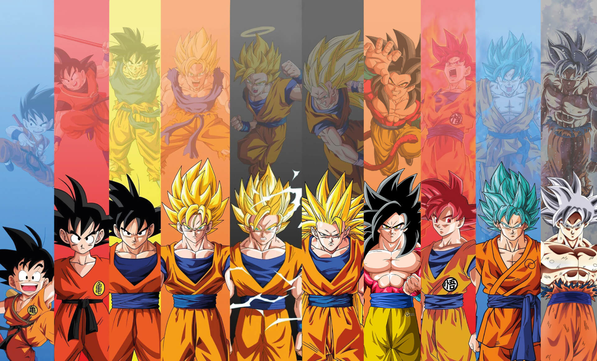

Totes les Sagues de Dragon Ball
Al llarg de quatre dècades, la història de Son Goku i els seus companys s'ha dividit en grans etapes i arcs argumentals:

1. Dragon Ball (Etapa Clàssica)
- Saga de l'Emperador Pilaf: Goku i Bulma es coneixen i emprenen el primer viatge per reunir les 7 Boles de Drac abans que el malvat Pilaf demani dominar el món.
- Saga del 21è Torneig Mundial d'Arts Marcials: Goku i Krilin entrenen sota les ordres del Follet Tortuga (Muten Roshi) i competeixen al gran torneig contra Jackie Chun.
- Saga de l'Exèrcit de la Cinta Vermella (Red Ribbon): Goku s'enfronta tot sol a una organització militar que busca les boles, derrotant assassins com Tao Pai Pai.
- Saga de Piccolo Daimaku i 23è Torneig Mundial: El rei dels dimonis Piccolo Daimaku amenaça la Terra. Tres anys més tard, Goku ja adult s'enfronta al seu fill Piccolo Jr. a la final del torneig.
2. Dragon Ball Z
- Saga dels Saiyans: L'arribada de Raditz revela l'origen extraterrestre de Goku. Els Guerrers Z han de defensar la Terra de Nappa i del príncep Vegeta.
- Saga de Namek i Freezer: Viatge al planeta Namek per reviure els companys caiguts, culminant en la batalla contra el tirà Freezer i el despertar del llegendari Super Saiyan.
- Saga dels Androides i Cèl·lula (Cell): Trunks del futur adverteix d'una amenaça cibernètica creada pel Dr. Gero. El bioandroide Cell organitza un torneig on Son Gohan assoleix el Super Saiyan 2.
- Saga de Majin Buu: El bruixot Babidi desperta el monstre Majin Buu. Apareixen tècniques com la fusió (Gotenks i Vegetto) i Goku derrota Kid Buu amb una Genkidama universal.
3. Dragon Ball GT (Continuació alternativa dels anys 90)
- Sagues de Baby, Super 17 i els Dracs Malignes: Goku torna a ser petit per un desig accidental. Viatja per l'espai, aconsegueix la transformació del Super Saiyan 4 i s'enfronta als dracs nascuts de l'energia negativa de les Boles de Drac.
4. Dragon Ball Super
- Saga de la Batalla dels Déus i Resurrecció de Freezer: Goku coneix Bills (Déu de la Destrucció) i Whis, descobrint el poder del Super Saiyan Déu i el Super Saiyan Blue.
- Saga del Torneig del 6è Univers i Goku Black / Zamasu: Competició amistosa entre universos i viatge al futur de Trunks per aturar el pla Zero Humans de Zamasu.
- Saga de la Supervivència Universal (Torneig del Poder): Vuit universos lluiten per evitar ser esborrats per Zeno-sama. Goku desperta l'Ultra Instint contra Jiren.
5. Dragon Ball Daima (2024)
- Saga del Regne dels Dimonis: Per culpa d'una conspiració liderada per Gomah, Goku i els seus amics són convertits en nens i viatgen al Regne dels Dimonis per revertir l'encanteri.
Zona d'Accés Capsule Corp - Canvi de Contrasenya
Introdueix una nova contrasenya dues vegades (mínim 8 caràcters) per desbloquejar els arxius confidencials de Capsule Corp.
Accés concedit: Arxius Confidencials de Capsule Corp
1. Registre de la Màquina del Temps de Bulma: Els viatges en el temps no modifiquen el passat d'una única línia, sinó que creen universos paral·lels alternatius (com el futur de Trunks devastat pels Androides 17 i 18).
2. Dades dels Scouters (Mesuradors de Poder): El sistema imperial de Freezer va quedar obsolet a Namek quan el nivell de Son Goku en Super Saiyan va superar les 150.000.000 d'unitats de combat.
3. Les Super Boles de Drac: Creades pel Déu Drac Zarama, tenen la mida d'un planeta sencer (37.196 km de diàmetre) i permeten concedir qualsevol desig sense cap limitació.